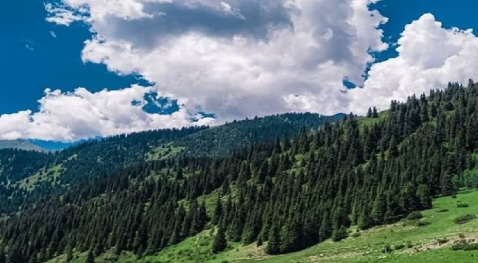
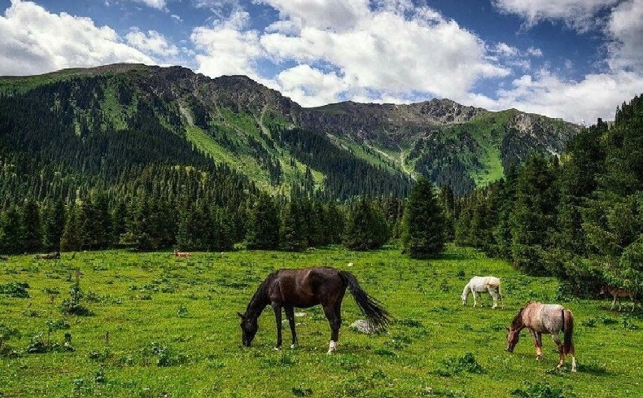

Кең-Кол көлү Фергана тоо кыркаснын түшүк батыш капталындагы Кызыл-Үңкүр өрөөнүнүн аймагынан орун алган.Кең-Кол жергеси өлкөнүн эң кооз жерлерине кирет. Алтынга алмашкыс жерде Кыргыз Републикасынын кызыл китебине кирген "Тянь Шань"карагайлары ээлеп турат. Андан сырткары жапайы айбанаттарга да бай аймак.Тоолорунда кийик,элик,илбирс, жана башка жаныбарлар жашаса, төмөн жагында кызыл китептпеги суур, кашкулактар бар.
 Көлдүн түштүк тарабынан Тегерек шаркыратмасы райондун аймагындагы табият эстелиги
Кызыл-Үнкүр суусунун жогору агымында пайда болгон. Анткени жапайы жаңгак жемиш токоюу ээлейт.
Аталган көлдүн түштүк тарабында табият тартуулаган Бээ-Эмчек аттуу үңкүр жайгашкан, үңкүрдүн ичнде бээнин эмчегиндей
болгон эки салаа турат. Ал салаадан кадимкидей сүттүн ордуна суу тамчылап турат. Ошол себептен Бээ-Эмчек деп аталып келет.